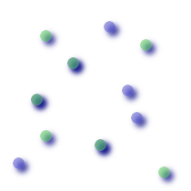
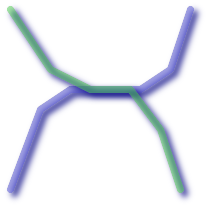
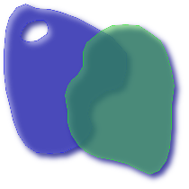

名前
ST_Overlaps — ジオメトリが共有空間を持ち、同じ次元で、かつ完全には一方に含まれていない場合にTRUEを返します。
概要
boolean ST_Overlaps(geometry A, geometry B);
説明
ジオメトリが「空間的にオーバラップ」する場合にTRUEを返します。ジオメトリがインタセクトして、かつ一方が他方を完全には含まない場合です。
GEOSモジュールによって実現しています。
![[注記]](images/note.png) | |
ジオメトリコレクションを引数として呼ばないでください。 |
この関数の呼び出しによって、ジオメトリで使用可能なインデクスを使用したバウンディングボックスの比較が自動的に行われます。インデクスの使用を避けるには_ST_Overlapsを使います。
ご注意: これは論理値を返して整数を返さないのが「許される」版です。
 This method implements the OpenGIS Simple Features
Implementation Specification for SQL 1.1. s2.1.1.2 // s2.1.13.3
This method implements the OpenGIS Simple Features
Implementation Specification for SQL 1.1. s2.1.1.2 // s2.1.13.3
This method implements the SQL/MM specification. SQL-MM 3: 5.1.32
例
次に示す図全てで、TRUEが返されます。

| 
| 
|
-- 線上にある点は、線に含まれていますが
-- 低い次元ですので、線とオーバラップもクロスもしません
SELECT ST_Overlaps(a,b) As a_overlap_b,
ST_Crosses(a,b) As a_crosses_b,
ST_Intersects(a, b) As a_intersects_b, ST_Contains(b,a) As b_contains_a
FROM (SELECT ST_GeomFromText('POINT(1 0.5)') As a, ST_GeomFromText('LINESTRING(1 0, 1 1, 3 5)') As b)
As foo
a_overlap_b | a_crosses_b | a_intersects_b | b_contains_a
------------+-------------+----------------+--------------
f | f | t | t
-- ラインは部分的に円に含まれますが、完全にはインタセクトとクロスを満たしません
-- 次元の違いからオーバラップしません
SELECT ST_Overlaps(a,b) As a_overlap_b, ST_Crosses(a,b) As a_crosses_b,
ST_Intersects(a, b) As a_intersects_b,
ST_Contains(a,b) As a_contains_b
FROM (SELECT ST_Buffer(ST_GeomFromText('POINT(1 0.5)'), 3) As a, ST_GeomFromText('LINESTRING(1 0, 1 1, 3 5)') As b)
As foo;
a_overlap_b | a_crosses_b | a_intersects_b | a_contains_b
-------------+-------------+----------------+--------------
f | t | t | f
-- 円にインタセクトした、2次元の曲がったホットドッグ
-- (または、ふくれたラインストリング)です。
-- 完全には円に含まれず、同じ次元ですのでオーバラップします。
-- インタセクションの次元が最大次元と同じ2次元ですから、クロスしません。
SELECT ST_Overlaps(a,b) As a_overlap_b, ST_Crosses(a,b) As a_crosses_b, ST_Intersects(a, b) As a_intersects_b,
ST_Contains(b,a) As b_contains_a,
ST_Dimension(a) As dim_a, ST_Dimension(b) as dim_b, ST_Dimension(ST_Intersection(a,b)) As dima_intersection_b
FROM (SELECT ST_Buffer(ST_GeomFromText('POINT(1 0.5)'), 3) As a,
ST_Buffer(ST_GeomFromText('LINESTRING(1 0, 1 1, 3 5)'),0.5) As b)
As foo;
a_overlap_b | a_crosses_b | a_intersects_b | b_contains_a | dim_a | dim_b | dima_intersection_b
-------------+-------------+----------------+--------------+-------+-------+---------------------
t | f | t | f | 2 | 2 | 2